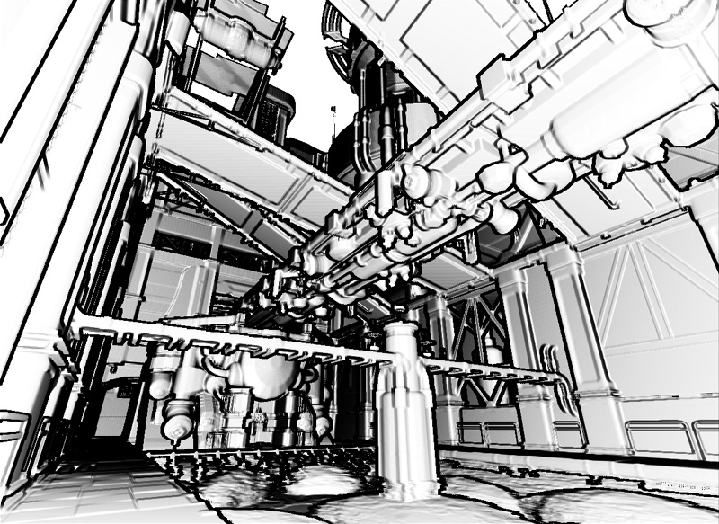
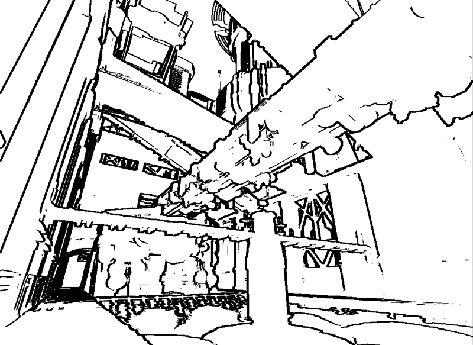

UDN
Search public documentation:
DevelopmentKitGemsSobelEdgeDetection
日本語訳
中国翻译
한국어
Interested in the Unreal Engine?
Visit the Unreal Technology site.
Looking for jobs and company info?
Check out the Epic games site.
Questions about support via UDN?
Contact the UDN Staff
中国翻译
한국어
Interested in the Unreal Engine?
Visit the Unreal Technology site.
Looking for jobs and company info?
Check out the Epic games site.
Questions about support via UDN?
Contact the UDN Staff
UE3 Home > Unreal Development Kit Gems > Sobel Edge Detection Post Process Effect
UE3 Home > Post Process Effects > Sobel Edge Detection Post Process Effect
UE3 Home > Post Process Effects > Sobel Edge Detection Post Process Effect
Sobel Edge Detection Post Process Effect
Last tested against UDK Mar, 2011
PC compatible
- Sobel Edge Detection Post Process Effect
- Overview
- Material Shader
- Tweaking the post process effect
- Disabling the composite pass
- Disabling the minimum intensity pass
- Disabling the contrast pass
- Disabling the depth exclusion pass
- Adjusting the depth exclusion distance
- Adjusting the contrast strength
- Adjusting the minimum intensity
- Adjusting the ambient brightness and darkness
- Adjusting the sobel pixel offset
- How to use
- Related Topics
- Conclusion
- Downloads
Overview
Material Shader
Calculating the offset
As each pixel needs to sample eight surrounding pixels, it needs to offset the UV look up when sampling the scene depth. Because the screen coordinates are aligned from zero to one and not zero to resolution width / height, the shader needs to calculate the relative pixel step. By adjusting the offset step, it is possible to control the final edge size. To have the best results ResolutionX and ResolutionY should be set to the current resolution.Using the offset
After calculating the sample steps, it needs to be used. To do this a Vector2 is created by using the Append material node. The resultant Vector2 is then added to the relative screen position. The resultant relative screen position is clamped between 0.f and 1.f. This is to prevent depth look up leaking due to the wrapping. There is no need to normalize the scene depth as it is useful to have the entire range of values. This is done for all of the possible combinations, which are:- UV02 (X = +offset, Y = -offset)
- UV12 (X = +offset, Y = 0)
- UV22 (X = +offset, Y = +offset)
- UV01 (X = 0, Y = -offset)
- UV21 (X = 0, Y = +offset)
- UV00 (X = -offset, Y = -offset)
- UV10 (X = -offset, Y = 0)
- UV20 (X = -offset, Y = +offset)
Calculating the X value
The formula to calculate the x value is, 0 - UV00 - (UV01 * 2) - UV02 + UV20 + (UV21 * 2) + UV22.Calculating the Y value
The formula to calculate the y value is, 0 - UV00 + UV02 - (UV10 * 2) + (UV12 * 2) - UV20 + UV22.Calculating the distance squared
The formula to calculate the distance squared is (X * X) + (Y * Y). The distance squared value can then be used to detect edges.Comparing the distance squared value
From here a comparision between the distance and a scalar parameter is done. When an abrupt change in the scene depth occurs, the distance squared value will be larger. Thus, a simple comparision is used to detect where an edge is and where it isn't.
Contrast pass
Using the contrast helps to increase the upper end of the values while decreasing the lower end. This can be helpful when you are needing to improve the 'sharpness' of the edge detection. This is help for slopes which have a slow differentiating depth value.Minimum intensity pass
Even after the contrast pass, you will still get gradients. To remove the gradients, pixel values above a certain value are set to one while everything else is set to zero. This removes all the gradients, but may produce other kinds of artifacts such as aliasing or large areas of black.Depth exclusion pass
Up to now, this shader can produce artifacts on sky domes or objects that are very far away. Also given that you know that edges would never occur within the sky dome, it is faster to just skip these pixels.Composite pass
After all of the passes, a gray scale texel is produced. Simply multiply this with the scene texture will add the edges.Complete!
Click to view the shader in full. Here's a screenshot of a level being rendered with the sobel edge post process effect.Tweaking the post process effect
Disabling the composite pass
Disabling the composite pass skips the step where the shader multiplies the results of the sobel edge detection with the scene sample texture node. This may be desirable for non photo realistic rendering.Disabling the minimum intensity pass
Disabling the minimum intensity pass skips the step where the shader removes pixel values below a input value. This may be desirable in non photo realistic rendering where you want to add more depth to the scene.Disabling the contrast pass
Disabling the contrast pass skips the step where the shader exponentially adjusts the pixel values. This may be desirable when you want to use the raw values, instead of pushing values out from the mid point.Disabling the depth exclusion pass
Disabling the depth exclusion pass skips the step where the shader skips past pixels where their depth value is larger than a input value. Normally you would want to have this pass so that sky domes do not produce artifacts.Adjusting the depth exclusion distance
Adjusting this value allows you skip pixels where their depth value is larger than the input value. Setting this value too low will cause the shader to skip past too many pixels, but setting this value too high may produce artifacts in other places. You will need to find the right value that best suits your scene or game art style.Adjusting the contrast strength
Adjusting this value allows you push pixel values outwards from the mid point which is usually 0.5f. Thus if a value is closer towards 0.f, the value will be pushed in this direction where as if a value is closer towards 1.f, it will be pushed in that direction. Adjusting the minimum intensity
Adjusting this value allows you to include or exclude pixel values that are below this input value. Thus if you wish to have crisper lines, set the minimum intensity to a smaller value, but if you wish to have darker patches; increase the value.Adjusting the ambient brightness and darkness
Adjusting these values allows you tighten or relax the overall brightness/darkness of the scene. Adjusting the sobel pixel offset
Adjusting this value allows you to sample pixels further away from the current pixel coordinate. This leads to thicker or thinner edges effectively.How to use
Related Topics
- Post Process Editor Guide
- Post Process Materials
- Post Process Technical Guide
- Post Process Effect Reference
Conclusion
Downloads
- Download the content used for this gem. (SobelEdgeContent.zip)